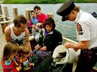

Fish Information Quiz

Directions: Read the statement and choose the most appropriate response. You may click the helpful hints button at any time. Good luck!
1. Fish are poikilothermic, or cold-blooded. This means that their *** .
a. body temperature remains cold at all times
b. blood contains a special chemical to enable fish to survive in cold water
c. body temperature is lower than the surrounding environment
d. body temperature varies according to the surrounding environment
helpful hint
2. In classifying fish, we can say that fish ***.
a. are animals that swim
b. may not be related to other animals
c. can be grouped into one of three categories; bony fish, cartilaginous fish and jawed fish
d. include the seahorse, jellyfish and sea cucumber
helpful hint
3.
A type of bird, the ground feeder finch, has a thick, conical beak for eating seed. The vegetarian tree finch has a parrot like beak for eating buds and fruit. These differences are examples of ***.
a. adaptive radiation
b. adaptive evolution
c. convergent evolution
d. preadapted radiation
helpful hint
4.
The pharynx and esophagus are both included as part of the fish *** system.
a. respiratory
b. excretory
c. reproductive
d. digestive
helpful hint
5.
The function of the lateral line system is to ***.
a. regulate the amount of air in the swim bladder which affects buoyancy
b. detect changes in temperature in the water
c. produce the reproductive cells
d. detect pressure changes including low-frequency sounds in the water
helpful hint
6. The function of the structure indicated in the diagram is to ***.
***DIAGRAM OF GILL PARTS - highlight gill raker*****
a. prevent particles from entering delicate parts of the gill
b. cover and protect the gills
c. remove carbon
dioxide from the blood and discharge the gas into the water
d. serve as the opening where water exits from the gills
helpful hint
7. A fish that lives in Saskatchewan waters, and is a member of Class Agnatha, is the ***.
a. lake sturgeon
b. chestnut lamprey
c. tadpole madtom
d. none of the above
helpful hint
9.
A fish exhibits the following characteristics:
- a sucking
mouth, with an upper jaw that overhangs the lower jaw
- a white belly and silvery sides with light colored fins
- most common fish taken by commercial fishermen
The fish described is the ***.
a. lake whitefish
b. lake trout
c. burbot
d. rainbow trout
helpful hint
10.
One of the most aggressive hunting fish in the lakes and streams in this province are known as ***.
a. pickerel
b. jackfish
c. shiners
d. rainbow trout
helpful hint